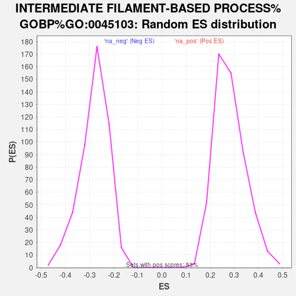

| | | Dataset | Tumour_vs_PDO |
| Phenotype | NoPhenotypeAvailable |
| Upregulated in class | na_pos |
| GeneSet | INTERMEDIATE FILAMENT-BASED PROCESS%GOBP%GO:0045103 |
| Enrichment Score (ES) | 0.6549315 |
| Normalized Enrichment Score (NES) | 2.3247674 |
| Nominal p-value | 0.0 |
| FDR q-value | 0.0 |
| FWER p-Value | 0.0 |
Table: GSEA Results Summary
 Fig 1: Enrichment plot: INTERMEDIATE FILAMENT-BASED PROCESS%GOBP%GO:0045103
Fig 1: Enrichment plot: INTERMEDIATE FILAMENT-BASED PROCESS%GOBP%GO:0045103
Profile of the Running ES Score & Positions of GeneSet Members on the Rank Ordered List
| SYMBOL | RANK IN GENE LIST | RANK METRIC SCORE | RUNNING ES | CORE ENRICHMENT | | 1 | KRT6A | 2 | 2.788 | 0.0698 | Yes |
| 2 | KRT6B | 39 | 2.026 | 0.1185 | Yes |
| 3 | KRT14 | 40 | 2.010 | 0.1690 | Yes |
| 4 | KRT13 | 46 | 1.983 | 0.2184 | Yes |
| 5 | PKP1 | 54 | 1.936 | 0.2666 | Yes |
| 6 | KRT4 | 63 | 1.865 | 0.3129 | Yes |
| 7 | KRT5 | 125 | 1.670 | 0.3512 | Yes |
| 8 | KRT78 | 139 | 1.648 | 0.3918 | Yes |
| 9 | EVPL | 193 | 1.535 | 0.4272 | Yes |
| 10 | KRT15 | 289 | 1.386 | 0.4565 | Yes |
| 11 | KRT16 | 328 | 1.337 | 0.4878 | Yes |
| 12 | KRT23 | 336 | 1.325 | 0.5207 | Yes |
| 13 | FAM83H | 593 | 1.119 | 0.5338 | Yes |
| 14 | PLEC | 675 | 1.067 | 0.5558 | Yes |
| 15 | DSP | 711 | 1.047 | 0.5801 | Yes |
| 16 | KRT10 | 802 | 1.006 | 0.6001 | Yes |
| 17 | PPL | 927 | 0.951 | 0.6167 | Yes |
| 18 | KRT17 | 1019 | 0.915 | 0.6343 | Yes |
| 19 | DNAJB6 | 1698 | 0.715 | 0.6127 | Yes |
| 20 | KRT80 | 1933 | 0.664 | 0.6157 | Yes |
| 21 | KRT18 | 2053 | 0.642 | 0.6249 | Yes |
| 22 | KRT75 | 2084 | 0.636 | 0.6391 | Yes |
| 23 | TCHH | 2304 | 0.589 | 0.6411 | Yes |
| 24 | KRT19 | 2384 | 0.578 | 0.6510 | Yes |
| 25 | CSNK1A1 | 2599 | 0.541 | 0.6521 | Yes |
| 26 | EPPK1 | 2910 | 0.495 | 0.6464 | Yes |
| 27 | INA | 3108 | 0.467 | 0.6466 | Yes |
| 28 | MACF1 | 3165 | 0.460 | 0.6549 | Yes |
| 29 | KRT7 | 3698 | 0.390 | 0.6337 | No |
| 30 | PKP2 | 3962 | 0.358 | 0.6273 | No |
| 31 | MTM1 | 5913 | 0.176 | 0.5180 | No |
| 32 | BFSP1 | 7425 | 0.071 | 0.4317 | No |
| 33 | AGFG1 | 7990 | 0.039 | 0.3997 | No |
| 34 | DST | 8097 | 0.032 | 0.3944 | No |
| 35 | SOD1 | 8715 | -0.003 | 0.3585 | No |
| 36 | NEFH | 9132 | -0.026 | 0.3348 | No |
| 37 | TOR1A | 9385 | -0.040 | 0.3211 | No |
| 38 | AGFG2 | 10415 | -0.104 | 0.2637 | No |
| 39 | KRT81 | 11279 | -0.168 | 0.2176 | No |
| 40 | KLHL24 | 12526 | -0.276 | 0.1519 | No |
| 41 | NEFL | 12823 | -0.306 | 0.1423 | No |
| 42 | NEFM | 12893 | -0.313 | 0.1461 | No |
| 43 | GFAP | 13959 | -0.426 | 0.0947 | No |
| 44 | ATXN3 | 14129 | -0.449 | 0.0961 | No |
| 45 | DES | 14918 | -0.575 | 0.0646 | No |
| 46 | VIM | 15232 | -0.635 | 0.0622 | No |
| 47 | SYNC | 15235 | -0.635 | 0.0781 | No |
| 48 | SYNM | 15278 | -0.644 | 0.0918 | No |
| 49 | KRT86 | 15953 | -0.794 | 0.0724 | No |
Table: GSEA details [plain text format]

Fig 2: INTERMEDIATE FILAMENT-BASED PROCESS%GOBP%GO:0045103: Random ES distribution
Gene set null distribution of ES for INTERMEDIATE FILAMENT-BASED PROCESS%GOBP%GO:0045103